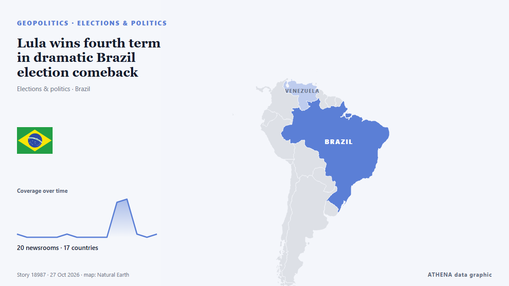

Lula wins fourth term in dramatic Brazil election comeback

The left-wing incumbent president had lost the first round to right-wing challenger Flávio Bolsonaro. из BBC News
Независимые источники: 20 изданий в 17 странах, с 20 окт.; первым сообщил Buenos Aires Times; освещение затихло. ATHENA оценивает риск как низкий (1.0/10), прежде всего из-за тяжести описываемого ущерба и географического и отраслевого охвата. Уверенность — 89 % (высокая); подтверждают независимые источники: 20 изданий, средняя надёжность источников — 77 %. Кто сообщал: 3 СМИ в стране Аргентина · Argentina, 3 СМИ в стране Индия · India, 3 СМИ в стране Турция · Turkey. Освещение шло с 20 окт. по 27 окт., 170 ч.
Почему это важно: События в сфере безопасности и дипломатии могут менять союзы, торговлю и рынки далеко за пределами непосредственно затронутых стран.
Что изменилось: 1 новое сообщение за 24 часа до 27 окт..
Первый заголовок: Trump Critic Lula Wins Record Fourth Term In Brazil In Surprise Comeback
Заголовки приводятся на английском языке, как они были опубликованы.
Коротко в цифрах
Отобрано, оценено и написано по опубликованной методологии ATHENA. Ни один редактор не вмешивается в отдельные события. Как это создаётся ›
| 20 Oct 16:42 UTC | 1 |
|---|---|
| 21 Oct 04:42 UTC | 0 |
| 21 Oct 16:42 UTC | 0 |
| 22 Oct 04:42 UTC | 0 |
| 22 Oct 16:42 UTC | 0 |
| 23 Oct 04:42 UTC | 1 |
| 23 Oct 16:42 UTC | 0 |
| 24 Oct 04:42 UTC | 0 |
| 24 Oct 16:42 UTC | 0 |
| 25 Oct 04:42 UTC | 0 |
| 25 Oct 16:42 UTC | 11 |
| 26 Oct 04:42 UTC | 12 |
| 26 Oct 16:42 UTC | 1 |
| 27 Oct 04:42 UTC | 0 |
| 27 Oct 16:42 UTC | 1 |
| 22 Oct 07:09 UTC | 0.0 |
|---|---|
| 26 Oct 02:12 UTC | 0.9 |
| 27 Oct 18:18 UTC | 1.0 |
Откуда эти цифры
Значимость
Риск
Уверенность
Освещение — кто сообщил и когда
заголовок в оригинале · открывает источник- Buenos Aires Times · Аргентина · ArgentinaWith selfies and squats, Brazil's Lula fights for one last comeback
- NDTV · Индия · IndiaWith Selfies And Squats, Brazil's Lula Seeks One Last Political Comeback
- Buenos Aires Times · Аргентина · ArgentinaLula wins record fourth term in Brazil in a shock comeback
- The Rio Times · Бразилия · BrazilLula Wins Again. What Now for Brazil?
- The Kathmandu Post · Непал · NepalLula, Brazil’s iconic working class president, wins historic fourth term in dramatic comeback
- Daily Maverick · Южно-Африканская Республика · South AfricaLula, Brazil’s iconic working class president, wins historic fourth term in dramatic comeback
- Buenos Aires Times · Аргентина · ArgentinaWhat challenges await Brazil's Lula in his fourth term in office?
- Al Jazeera English · Катар · QatarBrazil election results 2026: Key takeaways from Lula’s historic win
- Anadolu Agency (English) · Турция · TurkeyLeaders across Americas congratulate Brazil's Lula on historic reelection
- NDTV · Индия · IndiaTrump Critic Lula Wins Record Fourth Term In Brazil In Surprise Comeback
- SABC News · Южно-Африканская Республика · South AfricaLula wins fourth term in dramatic comeback
- Capital FM · Кения · KenyaLula wins fourth term as Brazil president in shock comeback against Flavio Bolsonaro
- China Daily — page reader · Китай · ChinaLula wins reelection in Brazil
- Anadolu Agency (English) · Турция · TurkeyPROFILE - From prison to historic 4th term: Brazil's Lula extends extraordinary political career
- Luxembourg Times · Люксембург · LuxembourgLula wins record fourth term in Brazil in surprise comeback
- Türkiye Today · Турция · TurkeyLula wins 4th term as Bolsonaro rejects defeat in historic Brazil election
- FBC News · Фиджи · FijiBrazil’s iconic working class president, wins historic fourth term
- NDTV · Индия · IndiaBrazil's Debt, Inflation, Tax Reform: Lula's Economic Challenges In 4th Term
- Arab Times · Кувейт · KuwaitLula Wins Historic Fourth Presidential Term After Political Comeback From Prison
- The Independent · Великобритания · United KingdomThe world leaders congratulating Brazil President Lula on his historic re-election
- Daily Trust · Нигерия · NigeriaLula wins historic fourth term as Brazilian president
- BBC News · Великобритания · United KingdomWho is Lula? From ex-worker and prisoner to Brazil's president again
- The Rio Times · Бразилия · BrazilWhat Lula’s Win Means for Venezuela and the Region
- Global News (World) · Канада · CanadaBrazil’s Lula wins presidential election, bucking regional shift towards right
- BBC News · Великобритания · United KingdomLula wins fourth term in dramatic Brazil election comeback
- Taipei Times · Тайвань · TaiwanLula wins fourth term, as Bolsonaro seeks to void result
- The Straits Times · Сингапур · SingaporeBrazil’s Lula turns 81, vows to work ‘24 hours a day’, following historic election win